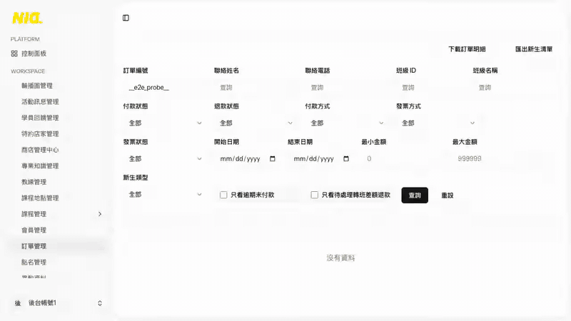
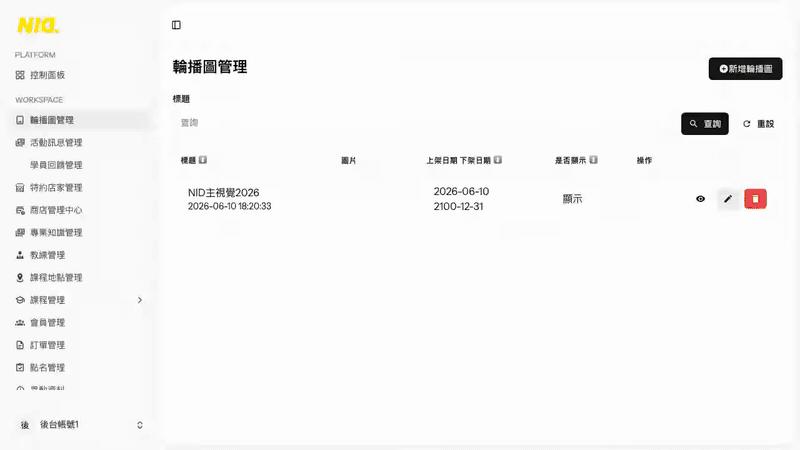

在新架構的測試環境裡，用真的瀏覽器模擬會員和員工，實際註冊、登入、報名、操作後台，確認每個功能都正常。用的是遮掉個資的正式資料副本，完全沒有動到正式網站。
請審查員對照三個網站的程式，列出使用者能做的每一個操作，逐項檢查有沒有測到；有漏就補，補完再審，一共審了 5 輪。
| 審查 | 找到的遺漏 |
|---|---|
| 第 1 輪 | 286 項（大多是「只打開頁面、沒有真的按下去」） |
| 第 2 輪 | 87 項 |
| 第 3 輪 | 17 項 |
| 第 4 輪 | 5 項 |
| 第 5 輪 | 3 項，審查員確認之後不需要再補 |
所有遺漏都已補測。
測試程式真的在網頁上操作的錄影（密碼、驗證碼顯示成圓點）。


| 功能 | 做了什麼 | 目的 | 結果 |
|---|---|---|---|
| 網站能正常打開 | 打開前台、後台每個網址，檢查安全連線與圖片載入。 | 客人輸入網址就能安全、快速地打開網站。 | 27 項通過 |
| 測試環境不會被搜尋到 | 檢查每一頁都告訴搜尋引擎「不要收錄」。 | 測試網站不會出現在 Google，不影響正式網站。 | 16 項通過 |
| 前台瀏覽 | 像一般訪客一樣逛首頁、課程、班級、特約店家、學員回饋、文章，手機也逛一遍。 | 所有公開頁面都正常，不會連到正式網站或前廠商的主機。 | 121 項通過 14 項正式網站本來就有的問題 1 項略過 沒有現成資料，改用後台新增後再測 |
| 會員註冊、登入、忘記密碼 | 實際註冊新會員、登入登出、打錯密碼、忘記密碼重設。 | 新會員能註冊，舊會員能登入、找回密碼。 | 27 項通過 3 項正式網站本來就有的問題 |
| 會員中心 | 改個人資料和大頭貼、看課程紀錄和課表、請假、補課、看排行榜。 | 會員登入後的每個功能都正常，改過的資料會存下來。 | 79 項通過 10 項正式網站本來就有的問題 1 項略過 已由其他補課測試涵蓋 |
| 報名與付款 | 選課、填報名表、各種付款與發票方式、用優惠、重新付款、取消付款、付款成功與失敗。 | 報名流程走得完，付款只會連到藍新測試環境，不會扣到真的錢。 | 64 項通過 9 項正式網站本來就有的問題 3 項略過 要先在藍新真的刷卡一次；要等到隔天才能驗，交給每晚的自動測試 |
| 帳號安全與權限 | 沒登入或沒權限時去開會員頁、後台、別人的訂單。 | 沒權限的人看不到、也改不了別人的資料。 | 65 項通過 5 項正式網站本來就有的問題 1 項略過 測試帳號資料不完整，只略過最後一步 |
| 網站後端的保護 | 繞過網站直接連後端、假造或重送資料，看會不會被擋。 | 只有自己的網站能拿資料，外人假造的請求都會被拒絕。 | 90 項通過 10 項正式網站本來就有的問題 1 項略過 沒有現成資料，改用後台新增後再測 |
| 後台管理 | 員工實際登入，每個管理功能都新增、修改、刪除一遍：課程、會員、訂單、發票、退費、點名、內容、帳號。 | 員工每天用的後台功能都正常。 | 263 項通過 26 項正式網站本來就有的問題 9 項略過 沒有現成資料，改用後台新增後再測；測試資料剛好沒有這種退款；要有人在藍新、Strava、LINE 的網頁上操作；要等到隔天才能驗，交給每晚的自動測試 |
| Strava、LINE 串接 | 連結 Strava、同步跑步紀錄、LINE 登入。 | 會員綁定 Strava、用 LINE 登入正常。 | 10 項通過 4 項正式網站本來就有的問題 6 項略過 LINE 測試帳號還沒建立；Strava 測試帳號還沒建立；要有人在藍新、Strava、LINE 的網頁上操作 |
| 測試 | 結果 |
|---|---|
| 能撐多少人 | 完成 新架構約 200–250 人同時上網仍順暢，資料庫升一級約 500 人；現在的正式主機約 50–100 人。大型活動前升級資料庫就好，約 5 分鐘。 |
| 系統自動處理的工作 | 正常 共 15 項，例如沒付款的訂單自動取消、自動開發票、寄報名成功信，全部實際執行過。 |
| 付款結果 | 正常 付款成功、失敗、ATM 取號都處理正確；有人假造付款成功，網站不會上當。（用藍新測試商店模擬，不會真的扣款） |
| 亂試密碼 | 正常 同一個人一分鐘打錯 6 次就被擋，假冒別人也繞不過。 |
| 正式網站 | 沒被動到 整個測試只在測試環境進行，正式網站沒有任何變動。 |
這些不是搬家造成的，正式網站現在也一樣。這次依決定先不改程式，每一項都寫成了測試，修好時會自動知道。
這幾步要在其他公司的網頁上操作，測試程式沒辦法代替。
每一項的名稱與結果（給技術人員參考）。